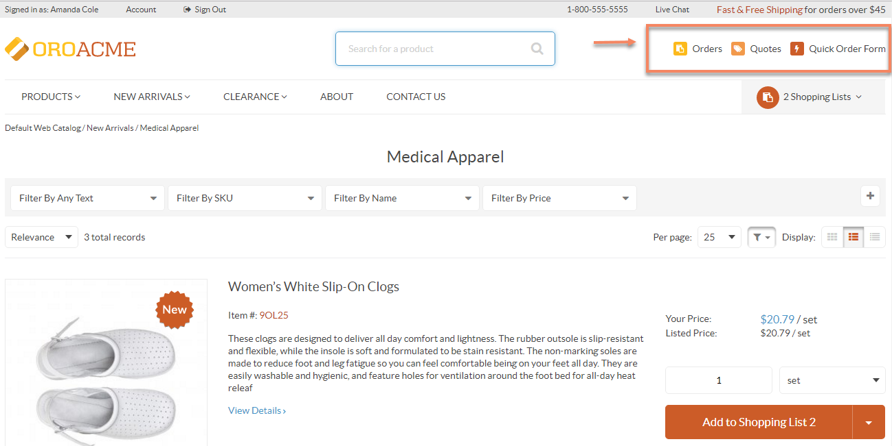
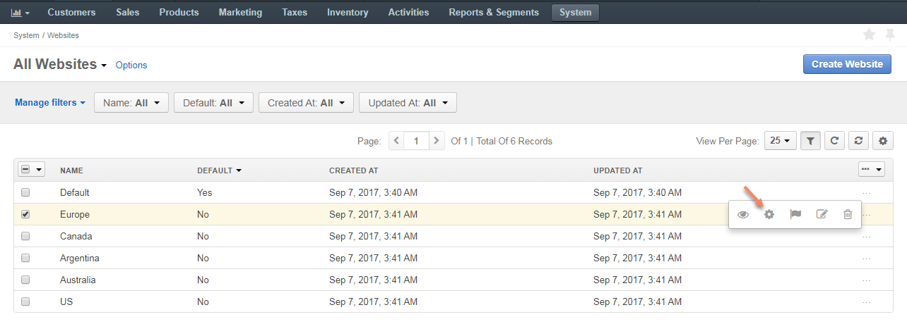
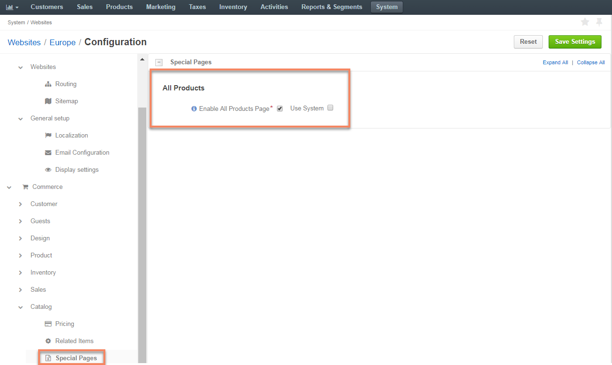
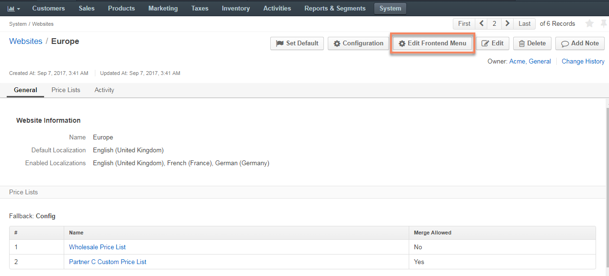
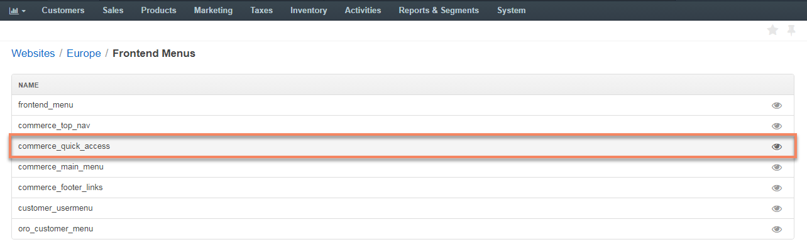
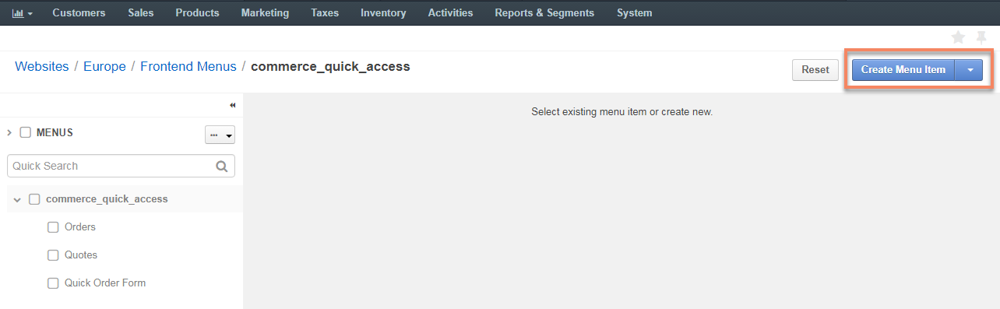

As an illustration, let us add a sample All Products page to the front store of the Europe website as a standalone page in the Quick Access menu.
For this, first enable All Products page in the system:
Navigate to System > Websites.
For Europe, hover over the more actions menu, and click .
Select Commerce > Catalog > Special Pages in the panel to the left.
In the All Products section, select the Enable All Products Page check box.
Click Save Settings.
Next, add the page to the quick access menu:
Navigate to System > Websites.
Click once on the Europe website to open its page.
On the website page, click Edit Frontend Menu to start editing the configuration.
Click once on the commerce_quick_access menu.
Click Create Menu Item on the top right.
Fill in the required fields:
Click Save on the top right to save the changes.
The All Products page should now be available as part of the Quick Access menu in the front store of the Europe website.
Note
Please note, that the products unassigned to a category will be listed first, followed by those which belong to a category.
Similarly, you can add All Products page to the menus of your choice.